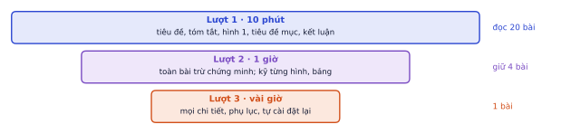
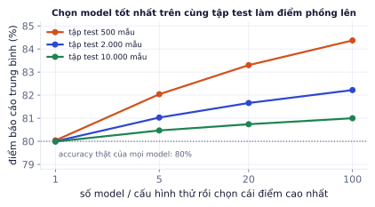

Bài 1
Cải thiện tương đối
tính tayBaseline có error rate 8%, phương pháp mới 6%.
Lời giải
Giảm 2 điểm phần trăm, tương đương giảm 25% lỗi. Bài báo thường chọn cách nói nghe ấn tượng hơn; khi đọc, quy về cả hai.
AI thay đổi nhanh đến mức kiến thức trong khóa học nào cũng cũ sau một năm. Kỹ năng bền nhất là tự học từ bài báo: đọc nhanh để biết bài nào đáng đọc kỹ, hiểu đúng kết quả, và tự tái hiện để kiểm chứng. Đây cũng là kỹ năng cốt lõi nếu bạn đi theo hướng nghiên cứu. Bài này có quy trình đọc ba lượt, bộ câu hỏi để đọc bảng kết quả (kèm mô phỏng cho thấy vì sao điểm benchmark hay bị phồng), và cách tái hiện một con số.
Mọi kỹ thuật trong lộ trình này (DDPM, LoRA, DPO, flow matching, VLA) đều bắt đầu từ một bài báo, và phần lớn công cụ bạn dùng ra đời chưa tới 3 năm. Người đọc được bài báo nắm kỹ thuật mới sớm hơn người chờ tutorial vài tháng. Với hướng nghiên cứu (như thực tập VLA), đọc và tái hiện bài báo chính là công việc hằng ngày.
| Nguồn | Dùng để |
|---|---|
| arXiv (cs.LG, cs.CL, cs.CV, cs.RO) | bài mới nhất, bản preprint miễn phí |
| Hugging Face Papers | bài nổi bật mỗi ngày, kèm model và code liên quan |
| Hội nghị: NeurIPS, ICML, ICLR, CVPR, ACL, CoRL | bài đã qua bình duyệt; OpenReview có cả nhận xét của người phản biện |
| Mục "Related work" của bài bạn đang đọc | lần ngược về các bài nền tảng |
| Google Scholar, Semantic Scholar | tìm bài trích dẫn một bài (lần xuôi tới bài mới hơn) |
(Trang Papers with Code từng là nơi tra code và bảng xếp hạng benchmark đã đóng cửa năm 2025.)

| Lượt | Thời gian | Đọc gì | Trả lời được |
|---|---|---|---|
| 1 | 10 phút | tiêu đề, tóm tắt, hình 1, tiêu đề các mục, kết luận | bài giải quyết vấn đề gì, có liên quan tới mình không |
| 2 | 1 giờ | toàn bài trừ chứng minh, kỹ từng hình và bảng | phương pháp làm gì, so với cái gì, kết quả chính |
| 3 | vài giờ | mọi chi tiết, tự dựng lại lập luận, đọc phụ lục | tự cài đặt lại được, chỉ ra được điểm yếu |
Mẹo cho lượt 1: hình 1 của bài ML thường là sơ đồ phương pháp hoặc kết quả ấn tượng nhất. Nếu sau 10 phút bạn không nói được bài làm gì trong một câu, hoặc bài nhiều khả năng là một biến thể nhỏ của bài đã biết, dừng ở đó.
Mẹo cho lượt 2: đọc với một câu hỏi cụ thể trong đầu ("phương pháp này dùng được cho dữ liệu của mình không?", "khác LoRA ở đâu?"). Đánh dấu thuật ngữ chưa hiểu, tra sau khi đọc hết, không dừng giữa chừng.
Bảng kết quả là nơi bài báo đưa ra tuyên bố. Đọc nó như người phản biện:
| Câu hỏi | Vì sao |
|---|---|
| So với cái gì? Baseline có mạnh và mới không? | thắng một baseline yếu hoặc cũ không nói lên nhiều |
| Baseline được tune công bằng không, hay chép số từ bài khác? | số chép từ bài cũ thường chạy với ít tính toán hơn |
| Cùng dữ liệu, cùng lượng tính toán, cùng kích thước model? | model lớn hơn, train lâu hơn tự nó đã tốt hơn |
| Chênh bao nhiêu, dao động bao nhiêu? | 0,3 điểm trên một seed có thể chỉ là nhiễu (P8.2) |
| Ablation: bỏ từng thành phần thì tụt bao nhiêu? | cho biết thành phần nào thật sự tạo ra cải thiện |
| Đo trên tập nào, bao nhiêu mẫu? | tập nhỏ thì sai số lớn; tập công khai lâu năm dễ bị "học thuộc" gián tiếp |
Một bảng minh họa (số liệu bịa để luyện đọc):
| Phương pháp | Model nền | Bước train | Accuracy |
|---|---|---|---|
| Baseline (số từ bài 2023) | 1B | 10k | 71,4 |
| Phương pháp mới | 3B | 30k | 74,1 |
| Phương pháp mới, bỏ thành phần X | 3B | 30k | 73,8 |
Đọc từng dòng:
Mô phỏng: K model có accuracy thật bằng nhau (80%). Đánh giá tất cả trên cùng một tập test, báo cáo điểm cao nhất. Lặp lại 4.000 lần:

Đây là điều xảy ra khi nhiều nhóm nghiên cứu (hoặc một nhóm qua nhiều tháng) cùng chỉnh model trên một tập test công khai: điểm tăng dần mà không chắc model thật sự tốt hơn. Vì vậy hãy tin hơn các kết quả trên tập test mới, nhiều benchmark khác nhau, hoặc có khoảng tin cậy.
Bài báo thường chọn cách nói nghe ấn tượng hơn.
Error rate giảm từ 15% xuống 12%:
"Giảm 20% lỗi" và "tăng accuracy từ 85% lên 88%" là cùng một kết quả. Khi đọc, quy về cả hai để so sánh với các bài khác.
Tái hiện được rồi mới thay đổi: thêm một ý tưởng, đổi dữ liệu, chạy ablation của riêng bạn.
Kết luận "bài báo sai" sau một lần tái hiện lệch. Lệch 1–2 điểm thường do seed, phiên bản thư viện, tiền xử lý dữ liệu, hoặc batch size khác. Chạy 3 seed, kiểm tra từng khác biệt, đọc issue của repo, trước khi kết luận. Ngược lại, tái hiện khớp một con số cũng chưa chứng minh tuyên bố của bài là đúng (có thể baseline yếu); nó chỉ chứng minh bạn chạy đúng code.
Nhiều tuyên bố của bài báo có thể kiểm tra bằng thí nghiệm rất nhỏ. Trong lộ trình này bạn đã làm vài lần: LoRA rank thấp bằng fine-tune toàn bộ (P5.5), flow matching tốt hơn ở ít bước (P5.6), ViT cần nhiều dữ liệu hơn CNN (P7.1). Mỗi thí nghiệm chạy dưới một phút trên CPU, đủ để hiểu cơ chế.
Mỗi bài đọc lượt 2 trở lên, viết một trang theo khung cố định:
| Mục | Nội dung |
|---|---|
| Vấn đề | bài giải quyết gì, vì sao các cách cũ chưa đủ |
| Ý tưởng chính | 3 câu, không thuật ngữ thừa |
| Phương pháp | sơ đồ hoặc công thức cốt lõi |
| Kết quả chính | kèm số cụ thể từ bảng |
| Điểm yếu | nhận xét của bạn, không chép mục Limitations |
| Câu hỏi mở | điều bài chưa trả lời |
| Liên hệ | dùng được gì cho việc của bạn |
Sau vài tháng bạn có một kho ghi chú tra cứu được. Viết blog giải thích một bài báo bằng tiếng Anh (kèm thí nghiệm tái hiện nhỏ) là cách tốt để vừa hiểu sâu vừa xây hồ sơ: nhà tuyển dụng và giáo sư đọc được cách bạn suy nghĩ.
Ghi nhớ: con số trong bài báo là một tuyên bố cần kiểm chứng, không phải sự thật. Tái hiện là cách học sâu nhất.
| Chủ đề | Ý chính |
|---|---|
| Tìm bài | arXiv, Hugging Face Papers, hội nghị, Related work, Scholar |
| Ba lượt | 10 phút → 1 giờ → vài giờ; phần lớn bài dừng ở lượt 1 |
| Đọc bảng | baseline, cùng điều kiện, dao động, ablation, tập test |
| Điểm phồng | chọn tốt nhất trên cùng tập test làm điểm tăng giả |
| Tái hiện | một con số, quy mô nhỏ, ghi khác biệt, 3 seed, đọc issue |
| Ghi chép | một trang, khung cố định; blog tiếng Anh |
| Thuật ngữ | Nghĩa |
|---|---|
| preprint | bản thảo đăng trước khi bình duyệt (arXiv) |
| peer review | bình duyệt |
| baseline | phương pháp làm mốc so sánh |
| ablation study | bỏ từng thành phần để đo đóng góp |
| SOTA | state of the art, kết quả tốt nhất hiện tại |
| benchmark | bộ dữ liệu và thước đo chuẩn để so sánh |
| reproducibility | khả năng tái hiện |
| absolute / relative improvement | cải thiện tuyệt đối / tương đối |
| test set overfitting | chỉnh model theo tập test làm điểm phồng |
Baseline có error rate 8%, phương pháp mới 6%.
Giảm 2 điểm phần trăm, tương đương giảm 25% lỗi. Bài báo thường chọn cách nói nghe ấn tượng hơn; khi đọc, quy về cả hai.
Phương pháp A qua 3 seed: 71.2, 72.0, 70.8. Phương pháp B: 72.1, 71.5, 72.4. Độ lệch chuẩn chia n.
A ≈ 71.33 ± 0.50, B = 72.0 ± 0.37. Chênh 0.67 cỡ một độ lệch chuẩn: có xu hướng B tốt hơn nhưng chưa chắc chắn với 3 seed. Nếu bài báo chỉ báo một seed, bạn không biết điều này.
Một bài báo viết: "Phương pháp của chúng tôi vượt baseline 1,2 điểm trên benchmark X." Đọc bảng thấy: baseline lấy số từ một bài 3 năm trước, phương pháp mới dùng model nền lớn gấp đôi, train lâu gấp 3, chỉ báo một seed. Liệt kê các vấn đề và thí nghiệm cần có để tin tuyên bố.
Vấn đề: baseline cũ, không chạy lại trong cùng điều kiện; model lớn hơn và train lâu hơn có thể tự giải thích 1,2 điểm; một seed không biết độ dao động. Cần: chạy lại baseline với cùng model nền, cùng lượng tính toán; báo nhiều seed và khoảng tin cậy; ablation bỏ thành phần mới nhưng giữ nguyên model lớn.
Chọn bài "LoRA: Low-Rank Adaptation of Large Language Models" hoặc "Denoising Diffusion Probabilistic Models". Viết tóm tắt một trang theo khung ở phần lý thuyết.
Một bản tóm tắt đạt yêu cầu có đủ 7 phần (vấn đề, ý tưởng 3 câu, phương pháp, kết quả kèm số, điểm yếu, câu hỏi mở, liên hệ), có ít nhất một con số cụ thể lấy từ bảng kết quả, và phần điểm yếu không chép lại từ mục "Limitations" của bài mà là nhận xét của bạn. Gửi Claude để được góp ý.
Tái hiện ở quy mô nhỏ một tuyên bố của LoRA: trên một tác vụ phân loại văn bản nhỏ, LoRA rank 8 đạt gần bằng fine-tune toàn bộ với số tham số train ít hơn rất nhiều. Viết code đếm số tham số train của hai cách cho một model encoder nhỏ.
from transformers import AutoModelForSequenceClassification, DistilBertConfig
from peft import LoraConfig, get_peft_model
# from_config: đúng kiến trúc distilbert-base-uncased nhưng trọng số ngẫu nhiên, không cần tải;
# đủ để đếm tham số. Train thật thì dùng from_pretrained("distilbert-base-uncased", num_labels=2)
cfg = DistilBertConfig(num_labels=2)
full = AutoModelForSequenceClassification.from_config(cfg)
n_full = sum(p.numel() for p in full.parameters() if p.requires_grad)
lora = get_peft_model(AutoModelForSequenceClassification.from_config(cfg),
LoraConfig(r=8, lora_alpha=16, target_modules=["q_lin", "v_lin"], task_type="SEQ_CLS"))
n_lora = sum(p.numel() for p in lora.parameters() if p.requires_grad)
print(f"full {n_full:,} | LoRA {n_lora:,} | tỉ lệ {n_lora / n_full:.2%}")
full 66,955,010 | LoRA 739,586 | tỉ lệ 1.10%
Dùng: đọc bảng kết quả với cảnh giác: so chênh lệch với độ dao động giữa các seed, kiểm định thống kê.
Một bài báo báo cáo phương pháp mới đạt 78,4 so với baseline 77,9 trên một benchmark. Bạn tái hiện cả hai với 5 seed. Tính trung bình ± độ lệch chuẩn, chênh lệch, và kiểm định t hai mẫu (Welch). Cải thiện có đáng tin không? Sau đó làm lại với kết quả tái hiện của một phương pháp khác.
import numpy as np
from scipy.stats import ttest_ind
baseline = np.array([77.6, 78.3, 77.2, 78.0, 77.9])
moi_A = np.array([78.1, 77.5, 78.9, 77.8, 78.2]) # phương pháp trong bài báo
moi_B = np.array([79.4, 79.9, 79.1, 80.2, 79.6]) # một phương pháp khác
# TODO: in mean ± std; p-value Welch cho A và cho B so với baseline
Viết code vào chỗ trống rồi bấm Chạy.
ttest_ind(a, b, equal_var=False).pvalue. Độ lệch chuẩn mẫu: x.std(ddof=1).
for ten, x in [("baseline", baseline), ("A", moi_A), ("B", moi_B)]:
print(f"{ten:8s}: {x.mean():.2f} ± {x.std(ddof=1):.2f}")
for ten, x in [("A", moi_A), ("B", moi_B)]:
t = ttest_ind(x, baseline, equal_var=False)
print(f"{ten} so với baseline: +{x.mean() - baseline.mean():.2f}, p = {t.pvalue:.3f}")
baseline: 77.80 ± 0.42 A : 78.10 ± 0.52 B : 79.64 ± 0.43 A so với baseline: +0.30, p = 0.348 B so với baseline: +1.84, p = 0.000
Chênh lệch của A nhỏ hơn cả độ dao động giữa các seed: rất có thể chỉ là may rủi, đặc biệt nếu bài báo chỉ chạy một seed. B cải thiện gần 2 điểm, rõ ràng vượt nhiễu. Khi đọc bảng kết quả, luôn hỏi: "chạy bao nhiêu seed, độ lệch chuẩn bao nhiêu?"
Dùng: bảng ablation: đóng góp của từng thành phần, tương tác giữa các thành phần, thành phần nào đáng giữ.
Một hệ RAG có ba cải tiến: hybrid search (H), reranker (R), viết lại câu hỏi (Q). Bảng ablation cho recall@5 với mọi tổ hợp bật/tắt. Tính: đóng góp trung bình của mỗi thành phần (trung bình chênh lệch khi bật so với khi tắt, giữ nguyên hai cái còn lại); thành phần nào đóng góp nhiều nhất; và Q có còn đáng giữ khi đã có H và R không (so chi phí 300 ms của Q).
import itertools
ket_qua = { # (H, R, Q): recall@5
(0, 0, 0): 0.62, (1, 0, 0): 0.71, (0, 1, 0): 0.70, (0, 0, 1): 0.66,
(1, 1, 0): 0.78, (1, 0, 1): 0.73, (0, 1, 1): 0.72, (1, 1, 1): 0.79}
ten = ["H", "R", "Q"]
# TODO: dong_gop[ten] = trung bình (kq với thành phần = 1) - (kq với thành phần = 0) qua 4 cặp
Viết code vào chỗ trống rồi bấm Chạy.
Với thành phần i: duyệt mọi khóa có vị trí i bằng 1, tạo khóa tương ứng có vị trí i bằng 0, lấy hiệu, rồi trung bình 4 hiệu.
dong_gop = {}
for i, t in enumerate(ten):
hieu = []
for k, v in ket_qua.items():
if k[i] == 1:
k0 = tuple(0 if j == i else x for j, x in enumerate(k))
hieu.append(v - ket_qua[k0])
dong_gop[t] = sum(hieu) / len(hieu)
print({k: round(v, 3) for k, v in dong_gop.items()})
print("Q khi đã có H và R:", round(ket_qua[(1, 1, 1)] - ket_qua[(1, 1, 0)], 3))
{'H': 0.078, 'R': 0.068, 'Q': 0.023}
Q khi đã có H và R: 0.01
Q giúp nhiều khi đứng một mình (+0,04 so với không có gì) nhưng gần như vô ích khi đã có H và R: các cải tiến chồng lấn nhau. Ablation chỉ bỏ từng thành phần khỏi hệ đầy đủ sẽ thấy điều này; ablation chỉ thêm từng thành phần vào baseline sẽ phóng đại đóng góp của Q. Với 300 ms chi phí cho 1 điểm recall, bỏ Q là quyết định hợp lý.
Các bước
Xong khi